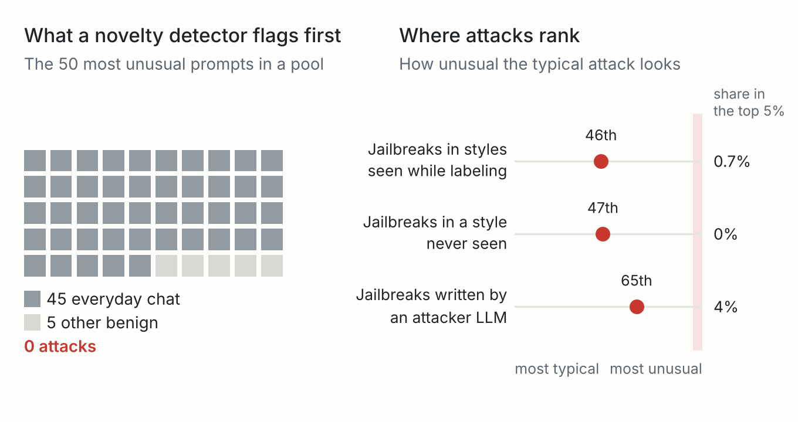
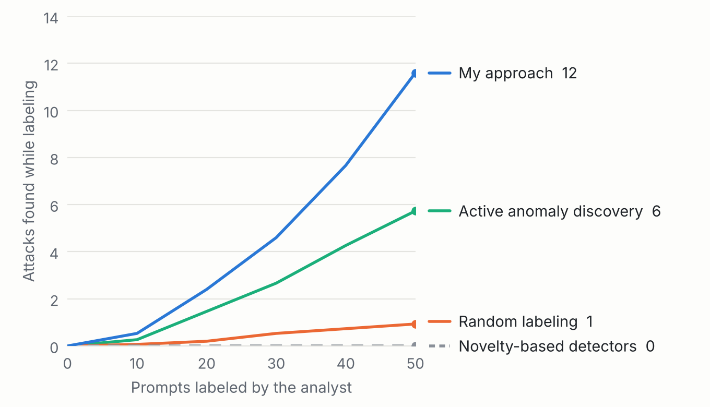
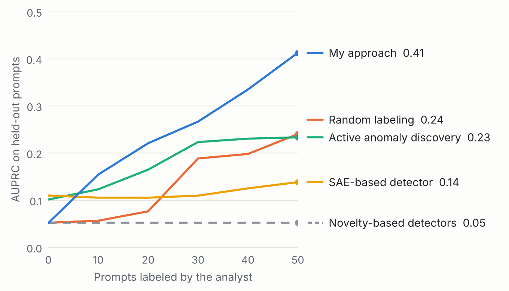

Finding jailbreak attempts with a small labeling budget
A recurring issue in my Ph.D. work on interactive anomaly detection was that statistical outliers don't always match what an expert actually cares about. This project looks at a setting where that mismatch matters a lot: finding jailbreak attempts in LLM traffic when an analyst only has time to review a few dozen prompts.
Disclaimer: Generative AI (Claude) was used to assist the collation and presentation of the results here.
Unusual isn't malicious
A common way to find anomalies interactively is to have an analyst check whatever a scoring measure ranks as most unusual. Here, that assumes attacks are the most unusual prompts. In realistic traffic, it seems mostly aren't.
In the three development pools used for my initial runs (below), every attack was a jailbreak wrapped around a harmful request. Of the 50 prompts a standard unsupervised novelty detector ranked as most unusual, about 45 were ordinary chat: requests where the user forgot to paste in the text they wanted edited, pasted code and error logs, and the same template sent over and over. None were attacks. The attacks didn't stand out at all: the typical one ranked near the middle of the benign prompts, and at most 4% of any kind of attack made it into the top 5% this detector would flag.

The broader benchmark I'm running now refines this (see “Current work” below): what gets flagged is unusual benign traffic, not benign prompts on previously unseen topics.
A detector that flags whatever looks rare will spend its labels on prompts like these, and with a small budget it may never show the analyst a single attack. Yet the first attack found is often what tells the detector what attacks look like at all. So the question I'm working on is both which prompts to label, so that a detector reading the LLM's internal activations learns what attacks look like rather than what atypical prompts look like, and what form that detector should take to make use of the analyst's feedback.
Initial runs: three development pools
I used these runs to develop the approach and fix its design. Their numbers are now being re-tested on the broader benchmark. These are early proof-of-concepts.
Setup
I hid a small fraction of jailbreak attempts (2%) in three pools of thousands of mostly ordinary prompts, and gave each method the same budget of 50 labels from a simulated analyst. Each detector reads an open-weight LLM's internal activations for every prompt, before the model responds. I then score it on a separate held-out set that includes attack types and benign topics it never saw during labeling.
The approach I'm testing is deliberately simple: a small detector that learns from every label, plus a rule for which prompt to show the analyst next. Neither piece is new on its own, and the query rule builds on established ideas from active learning. What I'm investigating is specific to LLMs: when this works, why existing interactive methods (including my own, PMA) fail where it succeeds, and how far it holds up across varied benchmarks.
Results
The first thing to check is whether a method puts attacks in front of the analyst at all. The novelty-based detectors, including PMA from my own prior work, found zero attacks in every run. They spent the whole budget on unusual benign prompts, which is exactly the failure shown above. A simple new approach found about twice as many attacks as active anomaly discovery, the strongest baseline here.

Those labels are what the detector learns from, so finding attacks early usually carries over to the held-out set. After 50 labels, my approach reaches an AUPRC of 0.40, against 0.23–0.24 for active anomaly discovery and for a detector trained on randomly chosen labels, and 0.14 for a recent detector built on sparse autoencoder features. I'm also planning to investigate why the sparse autoencoder representation and method is performing below what I would have expected.

These numbers assume the defender starts with no labeled examples. In practice, a defender can also build a simple detector from public labeled data (about 2,000 prompts here), and on its own that reaches an AUPRC of 0.56 on the same held-out prompts. Using it as the starting point and adding 50 analyst labels raises this to 0.70, and every run finds at least one attack. So analyst feedback adds to a public starting point rather than being made redundant by it, and the current work tests both settings.
Caveats
The gain isn't uniform: on one of the three pools, random labeling and active anomaly discovery both beat my approach, and without a public starting point about one run in five finds no attack within 50 labels. In early tests with closely related versions of the approach, discovery struggled at very low attack rates (1 in 200 prompts), and PMA came out ahead in pools without everyday chat. False alarms are mixed: on new benign topics my approach flags about 4% of prompts, against about 10% for distance-based detectors, but it flags about 7% of benign prompts phrased like attacks, where those detectors flag almost none, so it partly learns “sounds adversarial” rather than “is harmful.”
Current work: a broader benchmark
Since mid-October, I've been building a broader benchmark to test the initial results at a larger scale, and started some experiments on it. It adds:
- ten new data pools, drawn after the approach was fixed on the development pools, with benign topics and later months of traffic held out, and attack types the first pools lacked: plain harmful requests, automatically optimized attacks, and real users' jailbreak attempts;
- the model's responses to the test attacks, generated and automatically judged (hand checks in progress), so detection can be split by whether the model actually complied;
- attack rates from 0.5% to 5% (planned), and access to a second model family.
First analysis: what a novelty detector flags (sanity check)
Across the ten new pools, chat on topics the detector never saw, or from later months, is flagged no more often than familiar chat, and all three are flagged far more than curated benign prompts. So the false alarms come from unusual benign traffic, not from new topics themselves. On the attack side, plain harmful requests and automatically optimized attacks stand out, but jailbreaks are flagged no more often than everyday chat, and most far less. Those are the attacks an analyst most needs help finding. Obviously this intuitively makes sense as jailbreaks are specifically designed to get around model safeguards and get the model to comply. So it seems likely, as some existing work has suggested, that for obvious attacks we can catch the model refusal along with the attack itself. For carefully engineered jailbreak attempts, I'm hoping we can arrive at feedback methods that are sufficient to detect them early and accurately.
![Bar chart of the share of each group a novelty detector flags, at a threshold that flags 5% of familiar benign prompts. Benign: everyday chat on familiar topics 9.4%, on topics never seen 7.4%, from later months 8.5%; curated benign requests 1.0%; benign prompts phrased like attacks 0.2%; harmless prompts that sound harmful 0.4%. Attacks: jailbreaks in styles seen while labeling 0.5%, in a style never seen 0.8%, written by an attacker LLM 9.3%; plain harmful requests 32%; automatically optimized attacks 65%.](img/jb-flagged-dark.png)
Next
The main comparisons on the new pools, with and without a public starting point, are ongoing. Whether this setting needs a new method, such as a version of PMA fully redesigned for LLM activations, is an open question. I expect the most difficult attack types will require deeper analysis into how the incremental feedback can help and what form this should take.
These results are preliminary and come from my own benchmark. Code and details may be available on request: txdinkins@gmail.com.